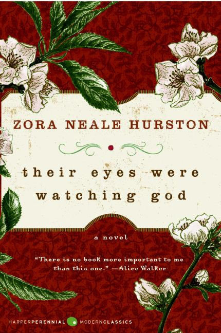

Their Eyes Were Watching God is a buildungsroman that vividly depicts racism and gender discrimination in the 1920s-1930s South through illustrating one young, African American woman's life story.
Through hardships and triumphs, the protagonist of the novel, Janie, attempts to determine her inner identity and place within society, as she navigates different relationships within her life.
Their Eyes Were Watching God Book Cover" /> About the Author